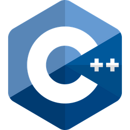
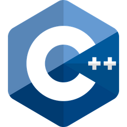

Education
Bachelor of Science in Data Science, Mathematics Concentration
Chapman University, Fowler School of Engineering
August 2021 - May 2025
Chapman University, Fowler School of Engineering
Cornell University,
Online Certificate in Machine Learning Foundations
August 2021 - May 2025
Skills
 


Languages: Python, R, SQL (SQLite, MySQL, SQL Server), C++, Java
Libraries: NumPy, Pandas, Scikit-learn, Matplotlib, Seaborn, NLTK, TensorFlow
Data Science Concepts: Data Visualization, Analytics, Data Extraction, Database Management, NLP, ML Algorithms
Professional Experience
Data Science Intern - Advantest Test Solutions, Inc.
Feb. 2024 - Present
- Developed a desktop application that automates testing compliance analysis, featuring interactive visualizations with filtering and calculation tools to detect anomalies in Device Under Test (DUT) placement
- Designed an algorithm to parse invoice PDFs, consolidating data into a structured dataset and generating analyses to identify inconsistencies, detect value changes, and visualize trends
- Established data pipelines to transfer data, tracking system performance and usage, to a dedicated SQL Server, supporting tool health and availability reporting
- Created a text classification model using NLP and cosine similarity to categorize fault reports, enhancing data retrieval and analysis efficiency
AI Studio Intern - American Express
Sept. 2023 - Dec. 2023
- Collaborated with AMEX professionals and 4 undergraduates to develop an algorithm that evaluates product similarity, driving customer satisfaction and revenue growth
- Conducted data exploration, preparation, and analysis using advanced visualization and preprocessing techniques, including tokenization and lemmatization in Natural Language Processing
- Developed a recommendation system using Word2Vec and cosine similarity to rank the top 10 most similar items to an unavailable product
Computer Science Instructor - The Coder School
Sept. 2023 - Dec. 2023
- Led weekly programming sessions for 7 students, assisting them with various computer science projects in Python, Java, HTML/CSS, and Data Science
- Developed and delivered customized lesson plans based on individual student needs, fostering the development of technical skills and project-based learning
- Strengthened students' problem-solving and critical thinking abilities through clear explanations of complex topics, while consistently assessing their understanding of new material
Leadership
AI/ML Fellow - Break Through Tech AI
May 2023 - April 2024
- Selected from 1500+ applicants to participate in the 12-month Break Through Tech AI program at Cornell Tech
- Completed a 9-week machine learning engineering training, mastering data analysis pipelines, Python libraries, and real-world ML applications through hands-on laboratory sessions
Projects
Habit Tracker - iOS Application (Swift, Xcode)
Nov. 2024 - Dec. 2024
Hospital Management (MySQL, Python)
April 2024 - May 2024
The New York Botanical Garden, Kaggle Competition (Python, Pandas, NumPy, Scikit-learn, TensorFlow)
Jan.2024 - April 2024
Women in Data Science, Kaggle Competition (Python, Pandas, NumPy, Scikit-learn)
Jan. 2024 - Feb. 2024
Product Similarity (Python, Pandas, NumPy, NLTK, Word2Vec)
Sept. 2023 - Dec. 2023Organizations
VP of Membership - Toastmasters International
April 2024 - Present
Active Member - Kappa Kappa Gamma, Eta Sigma Chapter
Jan. 2022 - Present